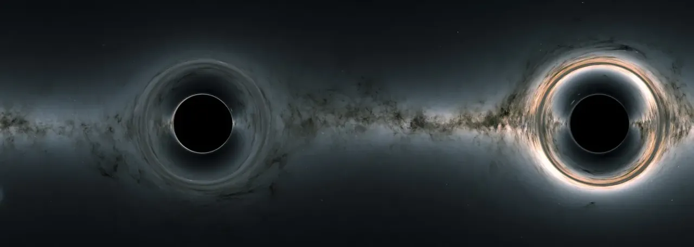

Buracos negros estão entre os objetos cósmicos mais misteriosos, muito estudados, mas ainda não totalmente compreendidos. Esses objetos não são realmente buracos. Eles são enormes concentrações de matéria compactadas em espaços muito pequenos. Um buraco negro é tão denso que a gravidade logo abaixo de sua superfície, o horizonte de eventos, é forte o suficiente para que nada – nem mesmo a luz – consiga escapar. O horizonte de eventos não é uma superfície como a da Terra ou mesmo a do Sol. É uma fronteira que contém toda a matéria que compõe o buraco negro.
Há muito que não sabemos sobre os buracos negros, como a aparência da matéria dentro de seus horizontes de eventos. No entanto, há muito que os cientistas sabem sobre os buracos negros.
Buracos negros não emitem nem refletem luz, tornando-os efetivamente invisíveis para telescópios. Os cientistas os detectam e estudam principalmente com base em como afetam seu entorno:
Buracos negros podem ser cercados por anéis de gás e poeira, chamados discos de acreção, que emitem luz em diversos comprimentos de onda, incluindo raios-X.
A gravidade intensa de um buraco negro supermassivo pode fazer com que estrelas orbitem ao seu redor de uma maneira específica. Astrônomos rastrearam as órbitas de várias estrelas próximas ao centro da Via Láctea para provar que ela abriga um buraco negro supermassivo, uma descoberta que rendeu o Prêmio Nobel de 2020.
Quando objetos muito massivos aceleram pelo espaço, eles criam ondulações no tecido do espaço-tempo chamadas ondas gravitacionais. Os cientistas podem detectar algumas dessas ondulações pelo efeito delas em detectores.
Objetos massivos como buracos negros podem dobrar e distorcer a luz de objetos mais distantes. Esse efeito, chamado lente gravitacional, pode ser usado para encontrar buracos negros isolados que de outra forma seriam invisíveis.
Buracos de minhoca. Eles não fornecem atalhos entre diferentes pontos no espaço, nem portais para outras dimensões ou universos.
Aspiradores cósmicos. Buracos negros não sugam matéria. A partir de uma distância suficientemente grande, seus efeitos gravitacionais são iguais aos de outros objetos com a mesma massa.